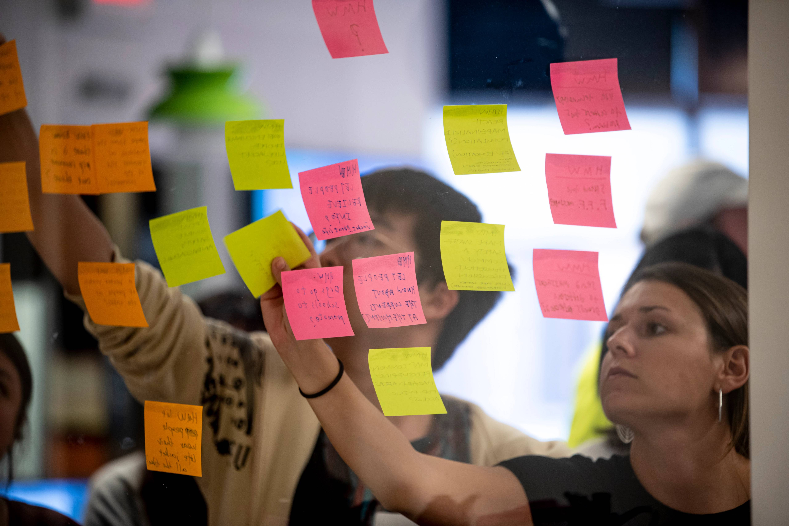

Launching & Executing Your Engaged Learning Project
From early kickoffs to real-time execution, build a strong foundation, master adaptive project management, conduct human-centered fieldwork, and integrate constructive feedback as your project unfolds.
The Value of Early Alignment & Active Execution
First impressions shape the trajectory of a partnership. The starting phase turns abstract project ideas into structured, professional commitments. By establishing clear team contracts, co-creating agendas, and aligning on project scope early, you build psychological safety within your team and trust with your client.
As you transition into active execution, real growth happens where challenges surface. Real-world projects rarely follow a straight line—requirements shift, team dynamics evolve, clients face unexpected internal constraints, and research data yields surprising results.
Developing resilience, adaptability, and ethical agility through these stages is what distinguishes top UMSI graduates. Learning to navigate early ambiguity, manage scope creep, incorporate mid-project feedback, and realign technical decisions with human needs equips you with the strategic problem-solving capabilities required for modern information careers.
Phased Focus & Core Objectives
Phase 2: Starting the Experience
Establishing professional communication, conducting initial meetings, and finalizing partnership agreements.
-
Communication: Draft clear, professional outreach to launch working relationships.
-
First Meetings: Structure productive kickoff meetings that define roles and project bounds.
-
Formalizing Agreements: Document team commitments and scope agreements shared by all stakeholders.
Phase 3: Managing & Executing in the Field
Conducting research, tracking progress, and maintaining clear communication with project sponsors.
-
Fieldwork & Research Methods: Apply human-centered design tools to observe contexts and extract insights.
-
Sponsor & Client Updates: Maintain transparency with regular progress reporting.
-
Feedback Loops: Gather, evaluate, and integrate constructive feedback mid-project.
Featured Resources & Handouts
More Resources
Types of resources and their purpose
| Category |
Resource Name |
Purpose |
|
Observation & Needfinding
|
HFLI - AEIOU Worksheet for Observations
|
Framework to categorize field observations (Activities, Environments, Interactions, Objects, Users).
|
|
User Research
|
HFLI User-Needs-Insights Worksheet
|
Translates raw interview and observation data into actionable design insights.
|
|
Feedback Management
|
HFLI Feedback Worksheet
|
Structures mid-point feedback cycles between students, instructors, and partners.
|
|
Case Analysis
|
Ginsberg Center - Community Engagement Cases Handout
|
Practical scenarios illustrating ethical dilemmas and resolution strategies.
|
|
Sponsor Tracking
|
Sponsor Dashboard Template - Organizational Excellence
|
High-level status dashboard to keep external clients informed on project health.
|
|
Communications Plan
|
Student Project Communications Plan Example & Template
|
Establishes meeting cadences, channels, and response windows for teams.
|
|
Workflow Tracking
|
Project Management Worksheet
|
Hands-on tool for breaking down project goals into milestones and task assignments.
|
Are you approaching the finish line? Head to the Wrap-up Phase!